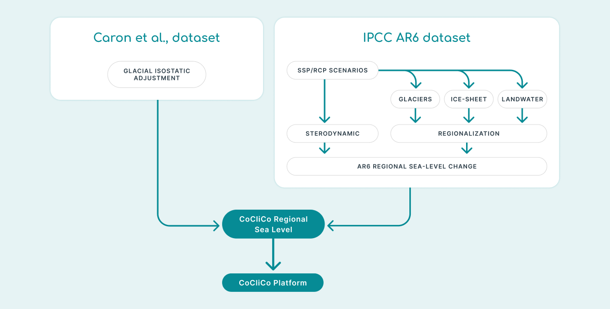
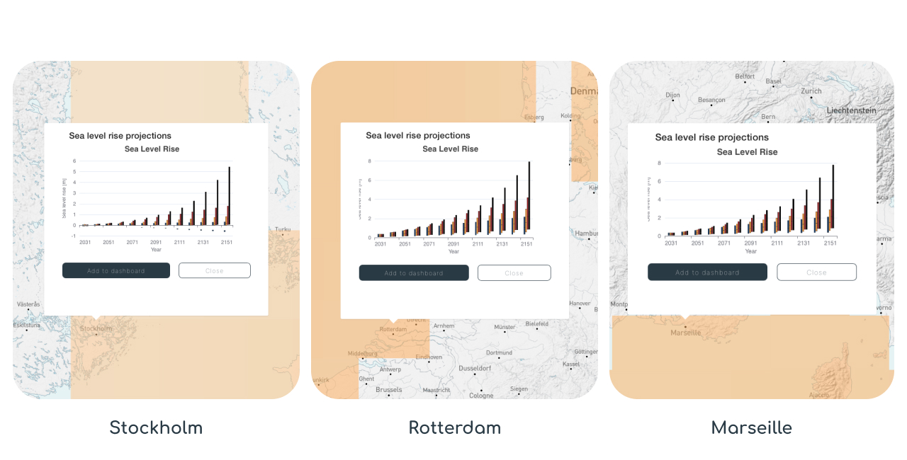

Key Layers, Sources, and How to Interpret Them
Data Layers in the CoCliCo platform
In the CoCliCo Platform, each data layer is the result of modeling and transforming various datasets from the STAC (SpatioTemporal Asset Catalog) to generate the final geospatial data layers. The platform is organized into five main categories: Sea Levels, Natural Hazards, Exposure and Vulnerability, Risk and Adaptation, and Background Layers, each containing its own specific data layers. Keep reading to discover which datasets are used to create the data layers in the platform.
User Stories
User Stories are ready-made map datasets in the CoCliCo platform. They combine different types of important information to show scenarios for coastal risk resulting from sea-level rise, floods and / or erosion. These layers make complex analyses easier and help users to quickly get a sense of coastal risks.
User research showed that policymakers need clear, actionable data for flood directives, while urban planners want tools to assess local risks, and where infrastructure managers focus on long-term resilience planning. These insights helped shape User Stories to provide accessible, scenario-driven visualizations for diverse decision-making needs. There are five User Stories:
- Flood Perspectives
- People Exposure
- Building Exposure
- Cost Benefit Analysis
- Damage Costs
Sea Levels
Data Layers & User Stories
The CoCliCo Platform provides access to sea-level rise (SLR) projections based on the latest scientific assessments from the Intergovernmental Panel on Climate Change (IPCC) Sixth Assessment Report (AR6), essential for understanding future changes and planning coastal adaptation.
Use the Sea Level Rise Projections User Story for detailed insights into how sea levels may change under different climate scenarios. With projections ranging from 0.3 to 1 meter by 2100—and continuing to rise—this data is crucial for assessing coastal flood risks, infrastructure planning, and long-term adaptation.
Unlike global estimates, these regional projections account for local factors like ocean circulation, ice melt, and land shifts, offering more precise insights for specific locations. This layer is a key foundation for flood models and supports all other User Stories in the platform.
"I need to see mean sea-level rise information now and in the future for different climate change scenarios, so I can do a broad-scale preliminary evaluation of risks.”
Data Sources
CoCliCo's regional sea-level projections are based on the IPCC AR6 dataset, incorporating all sea-level components except vertical land motions, which are corrected using GIA model outputs for improved regional accuracy.
- IPCC AR6 (Fox-Kemper et al., 2021)
- AR6 dataset is described and displayed at Sea Level Projection Tool – NASA Sea Level Change Portal and is publicly distributed at IPCC AR6 Sea Level Projections (Garner et al., 2022).
- Glacial Isostatic Adjustment (GIA) model outputs (Caron et al., 2018)

Methods
CoCliCo regional mean sea-level projections are constructed by combining the IPCC AR6 sea-level change dataset and the GIA model outputs of Caron et al. (2018), and propagating uncertainty following a Monte Carlo approach. The regional sea-level changes therefore include the changes in ocean density and circulation, the changes due to continental glaciers and ice-sheet mass loss and their respective regional spatial distribution, changes in land water and groundwater, and the post-glacial rebound.
Climate Scenarios
The platform offers sea-level rise projections for three Shared Socioeconomic Pathways (SSPs) and a high-end scenario:
-
SSP1-2.6
A low-emission scenario where global temperatures are limited to 1.5°C above pre-industrial levels, reflecting a sustainable future with rapid decarbonization. -
SSP2-4.5
A medium-emission scenario where global temperatures rise moderately, reflecting a future with some efforts to mitigate climate change. -
SSP5-8.5
A high-emission scenario where global temperatures rise significantly, reflecting a future with continued high greenhouse gas emissions and limited mitigation efforts. -
High-End
Represents more extreme but plausible outcomes of sea-level rise, useful for risk assessment and worst-case planning.
Ensembles
The projections are provided in three ensemble ranges to reflect the uncertainty in future sea-level rise:
-
MSL_h: Represents the upper range of projected sea-level rise, reflecting higher uncertainty and more extreme outcomes.
-
MSL_m: Represents the median projection of sea-level rise, based on the central estimates from the IPCC AR6.
-
MSL_l: Represents the lower range of projected sea-level rise, reflecting more optimistic outcomes with lower uncertainty.
Time Horizon
The projections are available for decadal time steps from 2030 to 2150, allowing users to explore how sea levels may change over the coming decades and into the next century.
Regional and Global Coverage
The projections are provided at both regional and global scales:
- Regional Scale: Users can explore how sea-level rise may vary across different parts of the world, accounting for local factors such as land subsidence, ocean currents, and glacial isostatic adjustment.
- Global Scale: The platform also provides global mean sea-level (GMSL) projections, which represent the average rise in sea levels worldwide.
Baseline Period
All projections are relative to a 1995–2014 baseline period, consistent with the IPCC AR6 methodology. This baseline provides a common reference point for comparing future sea-level rise scenarios.
How to Use the Sea Level Rise Projections
- Scenario Selection: Choose from the available scenarios (SSP1-2.6, SSP2-4.5, SSP5-8.5, and high-end) to explore different future pathways of sea-level rise.
- Ensemble Selection: Select between the high (MSL_h), median (MSL_m), and low (MSL_l) ensembles to understand the range of possible outcomes.
- Time Horizon: View projections for specific decades (e.g., 2030, 2040, 2050, etc.) to assess how sea levels may change over time.
- Specific Analysis: Zoom in on specific regions to see how sea-level rise may impact local coastlines.
Model Outputs

Why Are These Projections Important?
- Coastal Risk Assessment: The sea-level rise projections are critical for assessing the risks of coastal flooding, erosion, and other hazards. They help identify areas that may be most vulnerable to future sea-level rise.
- Adaptation Planning: By understanding how sea levels may change in the future, coastal planners and policymakers can develop strategies to protect communities, infrastructure, and ecosystems.
- Scientific Consistency: The projections are based on the latest IPCC AR6 report, ensuring that users have access to the most reliable and up-to-date scientific information.
Example of use
"Using the Sea Level Rise projections User Stories, city planners identified their neighbourhoods as having a higher risk of permanent flooding related to sea level rise by 2050 under high-emission scenarios high-emission scenarios compared to other neighbourhoods in the country. This analysis informed their decisions to prioritize green infrastructure development in those areas, reducing potential damage costs by 30%."
Limitations
Limitations are twofold: first, vertical ground motions unrelated to the glacial isostatic adjustment are not integrated. Yet CoCliCo’s research has shown that urban areas and populations located in coastal flood plains in Europe (excluding Fennoscandia) are affected by subsidence of approximately 1mm/year in average.
Second, sea level projections shown here have a resolution of 1°x1°, therefore not taking into account mesoscale ocean processes acting on the continental shelf and within semi-enclosed bassins such as the Mediterranean. Research undertaken by CoCliCo by ENEA and Mercator Ocean (D3.3, soon to be published) suggest that the order of magnitude of the error due to neglecting these processes can reach +/-10cm in Europe.
Further Analysis
Beside GIA, coastal regions in Europe can experience significant vertical land motion (VLM) which can be strong, robust and that can be assessed locally. There is for instance well known subsidence along the Italian Adriatic, the Netherlands or even in more localized shorelines such as the Aksiou delta next to Thessaloniki in Greece. This subsidence context can strongly inflate coastal hazards locally and should therefore be accounted for. The CoCliCo project explored local VLMs using the land vertical velocity estimates from the Copernicus European Ground Motion Service (EGMS) derived over the period 2016-2021 (Thiéblemont et al., 2024). While these estimates are not implemented in the regional sea-level projections of CoCliCo, they have been considered for the coastal hazard assessment and can be explored as an exploratory tool using the Workbench.
The Future Total Water Levels (TWL) and Total Water Level Return Periods data layers estimate how high sea levels may rise during coastal storm events in the future. These projections combine several key components that influence water levels along the coast:
- Storm surge (temporary rise in sea level caused by storms)
- Wave setup (increase in water level due to breaking waves)
- Tidal range (variation in sea level due to tides)
- Sea Level Rise (long-term rise including vertical land motion, like subsidence)
These layers provide insight into how extreme total water levels will change over time—for example, what might be considered a “1-in-100-year” flood today could occur more frequently in the future under climate change.
“I need to know how high-total water levels could reach along my coast by 2050 or 2100 so I can set safe design levels for infrastructure like sea walls or power stations.”
Data Sources These datasets are based on a combination of:
- Numerical model simulations for storm surge and wave climate
- Global tidal models assimilating satellite altimetry (e.g. TPXO9) to compute the astronomical tide
- Sea-level rise projections from IPCC-consistent scenarios
Methods
The data represent extreme total water levels at coastal target points along the European shoreline. They account for the combined effect of multiple flood drivers under different:
- Time horizons: e.g., 2030, 2050, 2100
- Emission scenarios: Shared Socioeconomic Pathways (SSP1-2.6, SSP5-8.5, etc.)
-
Future Total Water Levels Layer
This dataset provides the total water level values expected at each coastal point for a given return period, for different scenarios and time horizons. These values represent plausible design levels for planning and infrastructure.
-
Return Periods Layer
This dataset provides the total water level values expected at each coastal point for a given scenario and time horizon, for different return periods, such as: 1-in-10 years, 1-in-50 years, and 1-in-100 years.
These show how often such total water levels might be expected in the future, allowing for better risk assessment and planning.
Climate Scenarios
The dataset includes projections for three climate scenarios:
-
Historical
Represents the baseline period (1970–2000) for validating the model. -
RCP4.5
A medium-emission scenario where global temperatures rise moderately. -
RCP8.5
A high-emission scenario where global temperatures rise significantly.
Geographic Coverage
- Entire European coastline, including EU countries and the UK
- Coastal target points represent strategic sampling locations for local flood modelling
How to Use the Future Total Water Levels and Return Periods Data
- Design coastal infrastructure: Use future TWL data to set minimum elevation or structural thresholds for sea defences, ports, and buildings
- Inform flood hazard mapping: Identify which coastal areas are most at risk under future sea level and storm conditions
- Set emergency thresholds: Prepare response plans based on likely flood heights in future storms
- Support long-term adaptation: Evaluate how flood risk will evolve under different emissions scenarios and timeframes
- Use return periods for planning: Determine how often extreme flood levels may occur in the future to inform building codes or insurance strategies
Model Outputs

Why Is This Data Important?
These layers support evidence-based adaptation planning by providing clear, localized estimates of how sea levels and storm-driven floods will change over time. They are crucial for:
- Avoiding under-designing infrastructure in future high-risk zones
- Comparing today’s flood risks with future conditions
- Understanding how different climate pathways (e.g. low vs high emissions) will impact coastal flood hazards
Example of use
“A regional planner working on the future of a coastal city used the Total Water Levels Return Period dataset to identify that the city’s current flood defence—designed for a 1-in-100-year event—will be overtopped more frequently by 2100 under high emissions. This helped secure funding for upgrades, ensuring the city remains protected against more frequent and intense flooding.”
Further Analysis The values provided here correspond to the best fit. However, it is also important to consider the uncertainty associated with extreme-value modeling when interpreting return levels. For further discussion of this issue, more details can be found in Cotrim et al., 2025.
The Drivers of Future Total Water Levels data layer decomposes the contributing components of extreme coastal water levels under future climate scenarios. It shows representative statistics of individual physical drivers—storm surge, wave height, tidal range, and sea-level rise (SLR)—to the projected Total Water Level (TWL) at specific coastal locations.
Understanding the relative influence of each driver helps identify which processes dominate flood risk in different regions and informs targeted adaptation measures.
“I want to understand whether sea-level rise or storm surges will be the dominant factor increasing flood risk in my region by 2100, to design more effective coastal defences.”
Data Sources
This dataset is derived from:
- Numerical model simulations for storm surge and wave climate
- Global tidal models assimilating satellite altimetry (e.g. TPXO9) to compute the astronomical tide
- Sea-level rise projections from IPCC-consistent scenarios
Each component is statistically analysed and summarised at key coastal points across Europe.
Methods
The data represent relevant statistics of each TWL driver, summarised at coastal "target points". For each point, the following indicators are provided:
- ** Mean significant wave height (Hs)** – captures wave climate mean conditions
- ** 99th percentile of storm surge level** – represents extreme storm surge events
- ** 50th percentile of sea-level rise (SLR)** – median projection of SLR
- ** Mean tidal range** – average difference between high and low tide
These are estimated under future scenarios and time periods (e.g., 2050, 2100), allowing a component-by-component comparison of influence across Europe’s coastline.
Geographic Coverage The dataset covers coastal target points along the entire European coastline, including EU countries and the United Kingdom. Each point represents a coastal segment with distinct hydrodynamic conditions.
How to Use the Extreme Sea Level Data
- Assess Local Drivers: Identify whether storm surge, waves, tides, or sea-level rise contribute most to future flood risk in a specific area
- Compare Regions: Understand geographic variability in TWL drivers to support regional adaptation planning
- Model Inputs: Use component values to inform flood models or hybrid hazard simulations
- Design Criteria: Tailor flood protection designs based on the dominant local driver (e.g., wave-dominated vs surge-dominated coasts)
- Support Stakeholder Dialogue: Communicate clearly why specific interventions (e.g., breakwaters vs dikes) are necessary in different areas
Model Outputs

Why Is This Data Important?
While total future flood levels are essential for risk planning, knowing which processes drive those levels is equally critical. This data layer:
- Enables mechanistic understanding of coastal hazards
- Supports tailored adaptation solutions based on local conditions
- Helps identify coastal segments where sea-level rise may be the main future risk, versus those where storms or waves dominate
- Provides inputs for dynamic modelling and hybrid flood simulations that consider interacting drivers
Example of use
“A coastal engineer working on adaptation planning for the Dutch coastline used the Drivers of TWL data to determine that in their region, future total water levels were increasingly dominated by tidal range and sea-level rise, while wave height and storm surge level remained constant. This informed a dual approach of reinforcing flood barriers and elevating critical infrastructure, with less emphasis on wave attenuation measures.”
Further Analysis
The statistics provided here offer a broad view of the role played by the different components of the total water level. It is important to consider the possible contribution of extreme waves, storm surge events associated with other percentiles, and tidal variability. A more detailed analysis of the contributions of the different components to the TWL can be found in Cotrim et al., 2025.